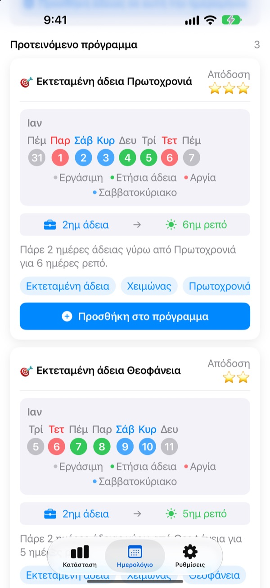
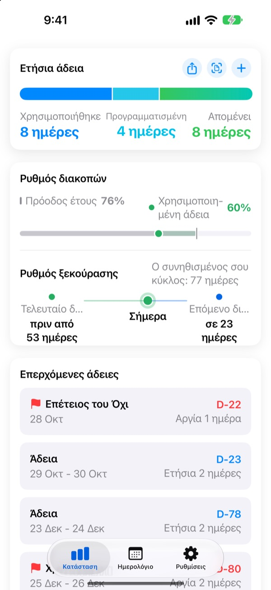
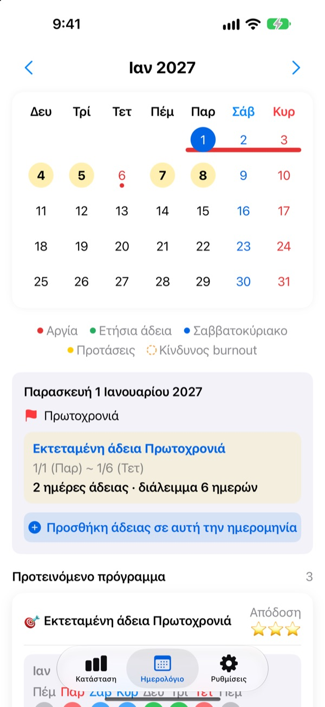
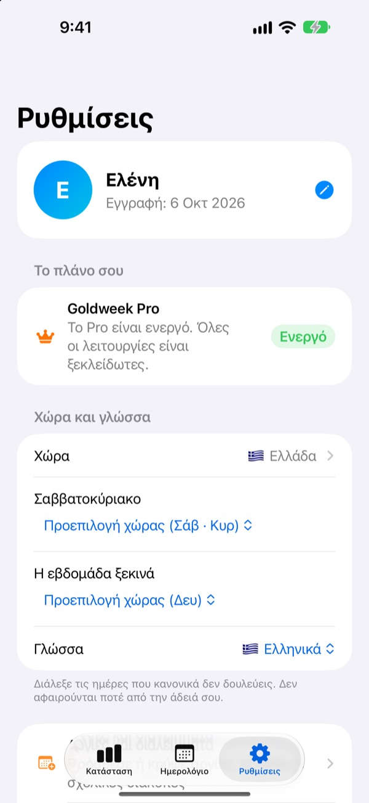

Λίγες μέρες άδειας,
μεγάλα τριήμερα
Το Goldweek συνδυάζει αργίες και Σαββατοκύριακα και σου δείχνει ακριβώς ποιες μέρες να πάρεις άδεια για να ξεκουραστείς όσο περισσότερο γίνεται. Τέλος το ξεφύλλισμα του ημερολογίου και το μέτρημα.
Δωρεάν λήψη. Η καταγραφή αδειών και οι προτάσεις μένουν δωρεάν.

Πόσο μακριά φτάνει η άδειά σου;
Διάλεξε πόσες μέρες άδειας μπορείς να πάρεις. Θα δεις τα μεγαλύτερα διαλείμματα που βγαίνουν γύρω από τις επόμενες αργίες.
Κουράστηκες να μετράς μέρες στο ημερολόγιο;
Η Πέμπτη είναι αργία, να πάρεις και την Παρασκευή; Ή να κρατήσεις τη μέρα για το τριήμερο του επόμενου μήνα; Μετά από πολύ ξεφύλλισμα παίρνεις άδεια όποια μέρα τύχει, και τον Δεκέμβριο οι μέρες που περίσσεψαν χάνονται. Το Goldweek κάνει τον λογαριασμό και σου δείχνει τις μέρες που κάνουν την άδειά σου να κρατάει περισσότερο.
Η άδειά σου με μια ματιά
Σύνολο, χρησιμοποιημένες και υπόλοιπο σε μία οθόνη. Δίπλα βλέπεις πόσο έχει προχωρήσει η χρονιά και πόση άδεια έχεις πάρει, ώστε να καταλαβαίνεις αμέσως αν φυλάς υπερβολικά πολλή.
Οι μέρες που σου μένουν και οι επόμενες άδειες φαίνονται σε ένα widget στην οθόνη Αφετηρίας.

Άδεια κατευθείαν στο ημερολόγιο
Αργίες, άδειες και προτεινόμενες γέφυρες εμφανίζονται με χρώματα στο ημερολόγιο. Πάτησε μια ημερομηνία για να προσθέσεις ή να αλλάξεις άδεια, ακόμα και μισή μέρα, ένα τέταρτο ή ώρες.
Παλιότερες άδειες τις περνάς μονομιάς από μια φωτογραφία της οθόνης του τμήματος προσωπικού.

Η χώρα σου, το ωράριό σου
Αργίες 42 χωρών, από την Ελλάδα και την Κύπρο ως την υπόλοιπη Ευρώπη, την Ασία και την Αμερική. Όπου οι αργίες αλλάζουν ανά περιοχή, διαλέγεις τη δική σου. Λείπει η χώρα σου; Πρόσθεσε τις δικές σου αργίες.
Ρυθμίζεις επίσης τις μέρες του Σαββατοκύριακου, την πρώτη μέρα της εβδομάδας και αν δουλεύεις σταθερό ωράριο, μερική απασχόληση ή βάρδιες.

Ξεκινάς σε τρία βήματα
- 1
Πες πού δουλεύεις
Την πρώτη φορά διαλέγεις χώρα και πόσες μέρες άδειας έχεις τον χρόνο.
- 2
Διάλεξε μια πρόταση
Στην καρτέλα Ημερολόγιο θα βρεις προτεινόμενα διαλείμματα. Πρόσθεσε όσα σου αρέσουν.
- 3
Κατέγραψε τις άδειές σου
Πάτησε μια ημερομηνία ή πέρασε παλιές άδειες από φωτογραφία.
Πώς υπολογίζεται
- Ολόκληρη μέρα
- 1 μέρα από το υπόλοιπο
- Μισή μέρα
- 0,5 μέρα
- Ένα τέταρτο
- 0,25 μέρα
- Ώρες
- Ανάλογα με τις ώρες εργασίας σου εκείνη τη μέρα
- Ασθένεια, ειδική άδεια, υπηρεσιακό ταξίδι
- Δεν αφαιρούνται από την άδεια
- Μπόνους άδεια
- Επιπλέον ρεπό, π.χ. για υπερωρίες, καταγράφονται χωριστά με ημερομηνία λήξης (Pro)
Τις μέρες άδειας του χρόνου και τον μήνα που ξεκινά το έτος αδειών σου τα αλλάζεις όποτε θέλεις από τις Ρυθμίσεις.
Η καλή ξεκούραση είναι δωρεάν. Τον σχεδιασμό τον αναλαμβάνουν τα Plus και Pro.
Δωρεάν
- Ολόκληρες, μισές μέρες, τέταρτα και ώρες, μαζί με το υπόλοιπο
- Αργίες 42 χωρών, δικές σου αργίες και σχολικές διακοπές
- Όλες οι προτάσεις της χρονιάς, έως 3 στο πρόγραμμα
- Συμβουλές για τα διαστήματα ξεκούρασης, υπενθυμίσεις και widget
- Προσθήκη αδειών από φωτογραφία
- Αντίγραφο στο iCloud και κοινό πρόγραμμα με την οικογένεια
Plus και Pro
- Plus: Βέλτιστο ετήσιο πλάνο
- Plus: Απεριόριστες προτάσεις, και για πέρσι και του χρόνου
- Plus: Αποστολή αδειών στην εφαρμογή Ημερολόγιο
- Pro: Όλα του Plus, μπόνους άδεια, ετήσια όρια και μεταφορά ανά είδος
- Pro: Εισαγωγή σχολικού ημερολογίου και αυτόματος εντοπισμός ημερολογίου
- Pro: Κοινές άδειες και οικογενειακές επέτειοι
Κάθε επίπεδο διατίθεται ως ετήσια συνδρομή ή ως εφάπαξ αγορά για πάντα.
Οι ετήσιες συνδρομές ανανεώνονται αυτόματα, εκτός αν τις απενεργοποιήσεις τουλάχιστον 24 ώρες πριν λήξει η περίοδος. Τις διαχειρίζεσαι όποτε θέλεις από Ρυθμίσεις > Λογαριασμός Apple > Συνδρομές.
Συχνές ερωτήσεις
Το υπόλοιπο της άδειας δεν βγαίνει σωστό.
Έλεγξε στις Ρυθμίσεις τον μήνα που ξεκινά το έτος αδειών σου και πόσες μέρες άδειας έχεις συνολικά. Οι μισές μέρες (0,5) και τα τέταρτα (0,25) αφαιρούνται αυτόματα, ενώ είδη που δεν μετράνε, όπως ασθένεια, ειδική άδεια ή υπηρεσιακό ταξίδι, δεν αλλάζουν το υπόλοιπο. Αν και πάλι δεν βγαίνει, στείλε μας email.
Η άδειά μου δεν φαίνεται στο ημερολόγιο.
Οι ακυρωμένες άδειες δεν εμφανίζονται στο ημερολόγιο. Έλεγξε την κατάσταση της καταχώρισης στη Διαχείριση αδειών. Μπορεί να βοηθήσει και η ενημέρωση στην τελευταία έκδοση.
Πώς προσθέτω μπόνους άδεια;
Πάτησε + στην καρτέλα Κατάσταση για να ανοίξεις τη Διαχείριση αδειών και χρησιμοποίησε την ενότητα Μπόνους άδεια στο κάτω μέρος. Διάλεξε είδος (ρεπό, άδεια επιβράβευσης, άδεια ανανέωσης…), αριθμό ημερών και, αν θέλεις, ημερομηνία λήξης. Η μπόνους άδεια καταγράφεται χωριστά από την κανονική.
Πλήρωσα, αλλά δεν ξεκλειδώθηκε τίποτα.
Πάτησε Επαναφορά αγοράς στο κάτω μέρος της καρτέλας Ρυθμίσεις. Η αγορά επανέρχεται με τον λογαριασμό Apple με τον οποίο έχεις συνδεθεί στο App Store. Αν δεν βοηθήσει, στείλε μας email.
Χάνω τα δεδομένα μου αν διαγράψω την εφαρμογή;
Τα δεδομένα αποθηκεύονται στη συσκευή, οπότε με τη διαγραφή της εφαρμογής χάνονται. Ενεργοποίησε το αντίγραφο ασφαλείας στο iCloud για να έχεις ένα αντίγραφο που μπορείς να επαναφέρεις.
Μπορώ να προσθέσω δικές μου αργίες ή να κρύψω κάποιες;
Ναι. Στις Αργίες και διαλείμματα, στις Ρυθμίσεις, προσθέτεις δικές σου αργίες ή κρύβεις τις προεπιλεγμένες.
Ποιες χώρες υποστηρίζονται;
Το Goldweek έχει τις αργίες 42 χωρών. Διάλεξε τη χώρα σου στις Ρυθμίσεις (και την περιοχή, όπου οι αργίες διαφέρουν) και το ημερολόγιο ενημερώνεται αμέσως. Αν λείπει η χώρα σου, πρόσθεσε μόνος σου τις αργίες ή ζήτα την μέσω σχολίων από την εφαρμογή.
Πού αποθηκεύονται τα δεδομένα μου;
Ό,τι καταχωρείς μένει στη συσκευή σου ή στο δικό σου iCloud. Λαμβάνουμε μόνο ανώνυμα στατιστικά χρήσης, ανώνυμες αναφορές σφαλμάτων και σχόλια που επιλέγεις να μας στείλεις.
Για ό,τι δεν απαντιέται παραπάνω, ιδέες ή σφάλματα, γράψε στο leeo@kakao.com. Συνήθως απαντάμε μέσα σε μία με δύο εργάσιμες.